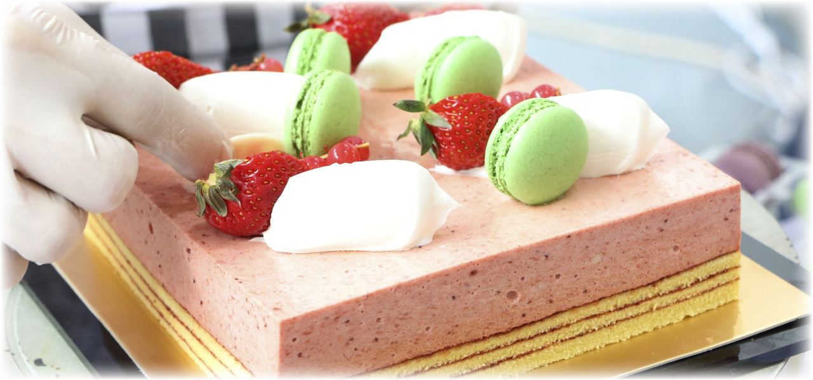
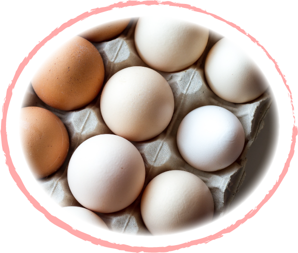
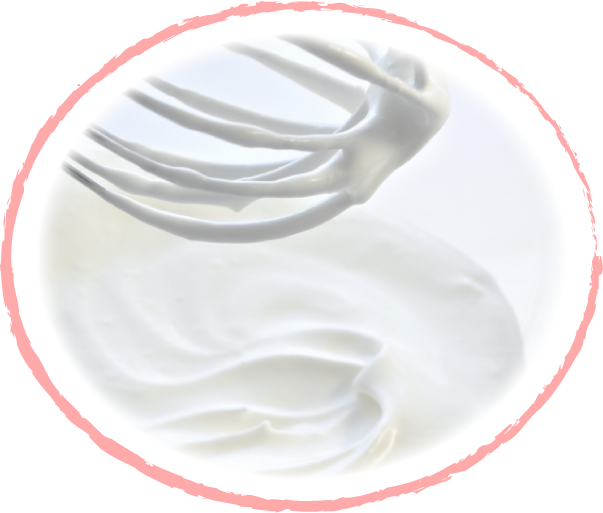

- 電話
- 03-1234-5678
- 住所
- 〒184-0002東京都小金井市梶野町1-2-3
JR東小金井駅より徒歩7分


定番ケーキから季節のケーキまで、オリジナルの発想とこだわりで
一つ一つ丁寧に、時間をかけておつくりしています。
小さなお子さまでも食べられるよう、やさしく、どこか懐かしい味わ
いのあるお菓子を作ることを目指し、大切な日、特別な日にお客さまが
何よりも安心して食べていただけるよう、心を込めて販売しております。
- クラウン オーナーパティシエ
- 木村 詩織
食品衛生責任者・製菓衛生士
東京製菓学校卒業
四季を通しての旬の食べ物は、楽しみでもあります。
当店は、いくつもの農家さんから直接材料を分けてもらい、
その旬のおいしいものを使います。
とくしま特選ブランド
認定の新鮮な平飼い卵や、平岩いちご農園さん（加茂郡
川辺町）の減農薬紅ほっぺ、ぶんぶんファームさん（美濃
加茂市）の無農薬・無化学肥料のクリなど、なるべく地元産、国産の旬のフルーツ類を使用しています。


北海道産原乳１００％の豊かな味わいとコクが魅力の生
クリームをふんだんに使用し、仕上げています。
生クリーム
は、オリジナルの配合でつくっているため甘さ控えめで、
たくさん食べてもしつこくなく、かつコクがあります。


- 電話
- 03-1234-5678
- 住所
- 〒184-0002東京都小金井市梶野町1-2-3
JR東小金井駅より徒歩7分